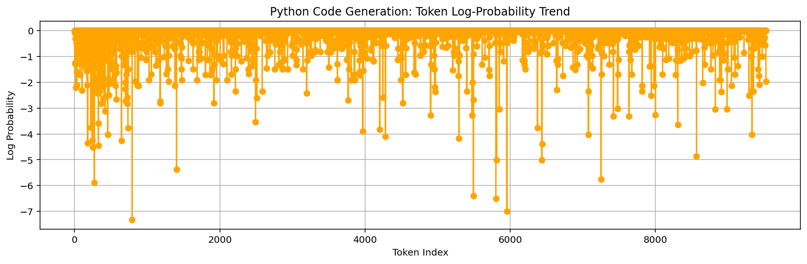
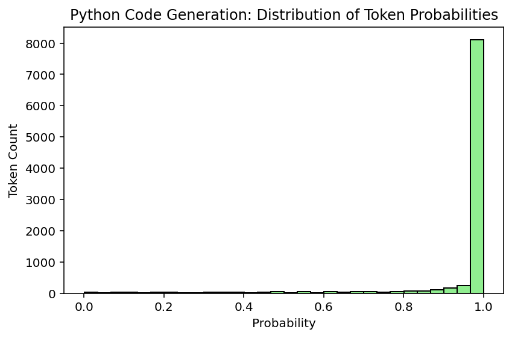
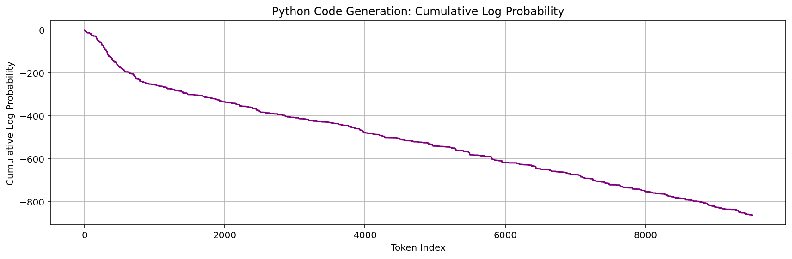
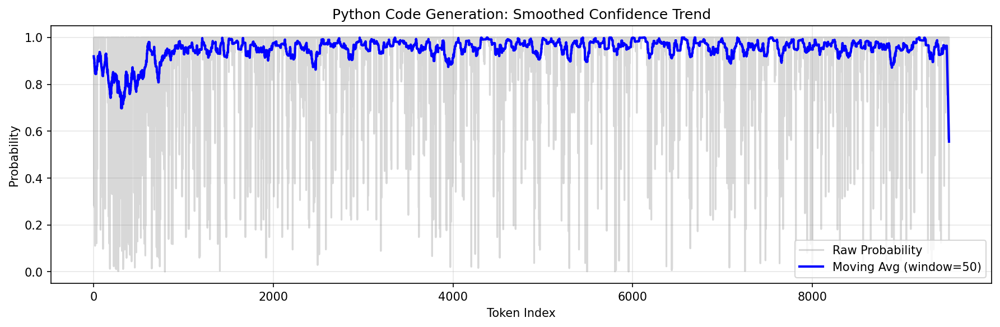
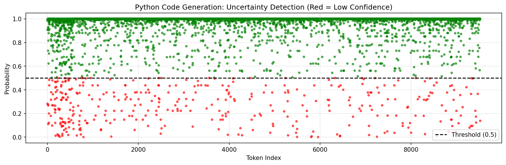
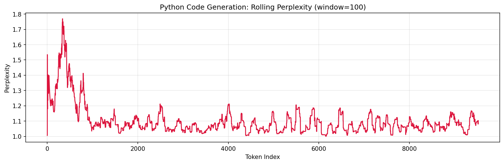
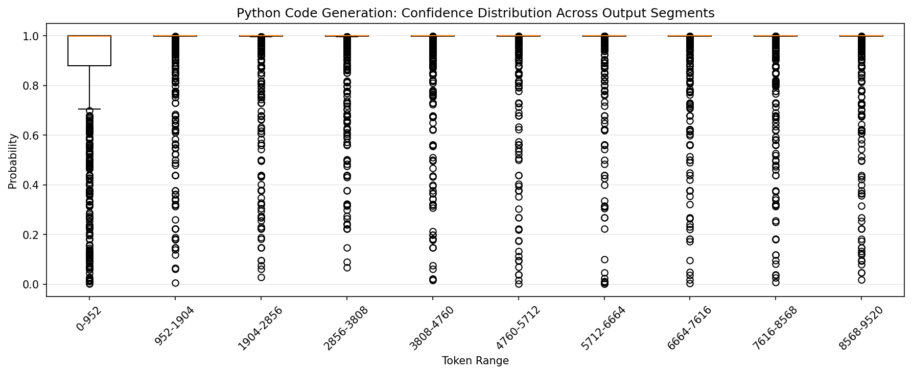
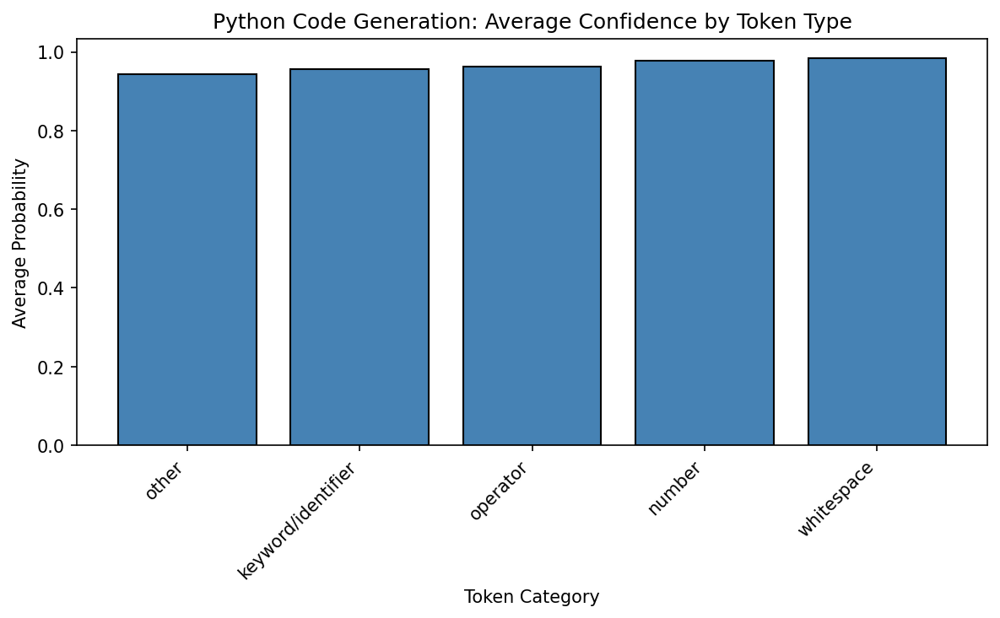
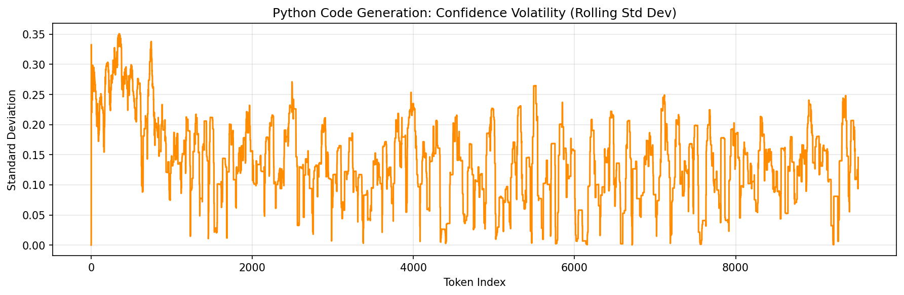

LLM Code Generation Report #3
Timestamp: 2025-10-11 13:18:47
Model: x-ai/grok-4-fast
Logprobs available: True
Selected User Stories
Click to expand/collapse
As a Data user, I want to have the 12-19-2017 deletions processed. As a UI designer, I want to redesign the Resources page, so that it matches the new Broker design styles. As a UI designer, I want to report to the Agencies about user testing, so that they are aware of their contributions to making Broker a better UX. As a UI designer, I want to move on to round 2 of DABS or FABS landing page edits, so that I can get approvals from leadership. As a UI designer, I want to move on to round 2 of Homepage edits, so that I can get approvals from leadership. As a UI designer, I want to move on to round 3 of the Help page edits, so that I can get approvals from leadership. As a Developer , I want to be able to log better, so that I can troubleshoot issues with particular submissions and functions. As a Developer, I want to add the updates on a FABS submission to be modified when the publishStatus changes, so that I know when the status of the submission has changed. As a DevOps engineer, I want New Relic to provide useful data across all applications. As a UI designer, I want to move on to round 2 of the Help page edits, so that I can get approvals from leadership. As a UI designer, I want to move on to round 2 of Homepage edits, so that I can get approvals from leadership. As a Broker user, I want to Upload and Validate the error message to have accurate text. As a Broker user, I want the D1 file generation to be synced with the FPDS data load, so that I don't have to regenerate a file if no data has been updated. As a Website user, I want to access published FABS files, so that I can see the new files as they come in. As an owner, I want to be sure that USAspending only send grant records to my system. As a Developer, I want to update the Broker validation rule table to account for the rule updates in DB-2213. As a Developer, I want to add the GTAS window data to the database, so that I can ensure the site is locked down during the GTAS submission period. As a Developer, I want D Files generation requests to be managed and cached, so that duplicate requests do not cause performance issues. As a user, I want to access the raw agency published files from FABS via USAspending. As an Agency user, I want to be able to include a large number of flexfields without performance impact. As a Broker user, I want to help create content mockups, so that I can submit my data efficiently. As a UI designer, I want to track the issues that come up in Tech Thursday, so that I know what to test and what want s to be fixed. As an Owner, I want to create a user testing summary from the UI SME, so that I can know what UI improvements we will follow through on. As a UI designer, I want to begin user testing, so that I can validate stakeholder UI improvement requests. As a UI designer, I want to schedule user testing, so that I can give the testers advanced notice to ensure buy-in. As an Owner, I want to design a schedule from the UI SME, so that I know the potential timeline of the UI improvements wanted. As an Owner, I want to design an audit from the UI SME, so that I know the potential scope of the UI improvements want ed. As a Developer, I want to prevent users from double publishing FABS submissions after refreshing, so that there are no duplicates. As an data user, I want to receive updates to FABS records. As an Agency user, I want to be able to include a large number of flexfields without performance impact. As a Developer , I want to update the FABS sample file to remove FundingAgencyCode after FABS is updated to no longer require the header. As an agency user, I want to ensure that deleted FSRS records are not included in submissions. As a website user, I want to see updated financial assistance data daily. As a user, I want the publish button in FABS to deactivate after I click it while the derivations are happening, so that I cannot click it multiple times for the same submission. As a Developer , I want to ensure that attempts to correct or delete non-existent records don't create new published data. As an Owner, I want to reset the environment to only take Staging MAX permissions, so that I can ensure that the FABS testers no longer have access. As a user, I want the flexfields in my submission file to appear in the warning and error files when the only error is a missing required element. As a user, I want to have accurate and complete data related to PPoPCode and PPoPCongressionalDistrict. As an agency user, I want the FABS validation rules to accept zero and blank for loan records. As an Agency user, I want FABS deployed into production, so I can submit my Financial Assistance data. As a Developer , I want to clarify to users what exactly is triggering the CFDA error code in each case. As an agency user, I want to be confident that the data coming from SAM is complete. As a Developer , I want my domain models to be indexed properly, so that I can get validation results back in a reasonable amount of time. As an agency user, I want the FABS validation rules to accept zero and blank for non-loan records. As a broker team member, I want to make some updates to the SQL codes for clarity. As an agency user, I want to have all derived data elements derived properly. As a broker team member, I want to add the 00***** and 00FORGN PPoPCode cases to the derivation logic. As a data user, I want to see the office names derived from office codes, so that I can have appropriate context for understanding them. As a broker user, I want the historical FABS loader to derive fields, so that my agency codes are correct in the PublishedAwardFinancialAssistance table. As a broker team member, I want to ensure the Broker resources, validations, and P&P pages are updated appropriately for the launch of FABS and DAIMS v1.1. As a Developer, I want the data loaded from historical FABS to include the FREC derivations, so that I can have consistent FREC data for USASpending.gov. As a user, I don't want to see NASA grants displayed as contracts. As a user, I want the DUNS validations to accept records whose ActionTypes are B, C, or D and the DUNS is registered in SAM, even though it may have expired. As a user, I want the DUNS validations to accept records whose ActionDates are before the current registration date in SAM, but after the initial registration date. As a broker team member, I want to derive FundingAgencyCode, so that the data quality and completeness improves. As an agency user, I want the maximum length allowed for LegalEntityAddressLine3 to match Schema v1.1. As an agency user, I want to use the schema v1.1 headers in my FABS file. As a agency user, I want to map the FederalActionObligation properly to the Atom Feed. As a Broker user, I want to have PPoPZIP+4 work the same as the Legal Entity ZIP validations. As a FABS user, I want to link the SAMPLE FILE on the "What you want to submit" dialog to point to the correct file, so that I have an accurate reference for my agency submissions. As an Agency user, I want FPDS data to be up-to-date daily. As a user, I want to access the raw agency published files from FABS via USAspending. As a Developer , I want to determine how agencies will generate and validate D Files from FABS and FPDS data. As a user, I want to generate and validate D Files from FABS and FPDS data. As an Agency user, I want the header information box to show updated date AND time, so that I know when it was updated. As an Agency user, I want to receive a more helpful file-level error when I upload a file with the wrong extension. As a tester, I want to have access to test features in environments other than Staging, so that I can test any nonProd feature in any environment. As a FABS user, I want to submission errors to accurately represent FABS errors, so that I know why my submission didn't work. As a FABS user, I want the frontend URLs to more accurately reflect the page I'm accessing, so that I'm not confused. As an Agency user, I want all historical Financial Assistance data loaded for FABS go-live. As a Developer , I want the historical FPDS data loader to include both extracted historical data and FPDS feed data. As an Agency user, I want historical FPDS data loaded. As an Agency user, I want to accurately see who created a submission, so that I'm not confused about who last updated a submission. As an agency user, I want to get File F in the correct format. As an Agency user, I want to better understand my file-level errors. As a Developer , I want to provide FABS groups that function under the FREC paradigm. As a tester, I want to ensure that FABS is deriving fields properly through a robust test file plus a follow up check. As an owner, I only want zero-padded fields, so that I can justify padding. As a Broker user, I want to submit records for individual recipients without receiving a DUNS error. As a user, I want more information about how many rows will be published prior to deciding whether to publish. As a Developer, I want to prevent duplicate transactions from being published and deal with the time gap between validation and the publishing decision. As a FABS user, I want to submit a citywide as a PPoPZIP and pass validations. As a Broker user, I want to have updated error codes that accurately reflect the logic and provide enough information, so that I can fix my submission. As an agency user, I want to leave off the last 4 digits of the ZIP without an error, so that I can complete my submissions. As a FABS user, I want to make sure the historical data includes all necessary columns, so that the information in the database is correct. As a data user, I want to access two additional fields from the FPDS data pull. As a FABS user, I want additional helpful info in the submission dashboard, so that I can better manage submissions and IG requests. As a FABS user, I want to download the uploaded FABS file, so that I can get the uploaded file. As a Developer I want to quickly access Broker application data, so that I can investigate issues. As a Developer , I want to determine the best way to load historical FPDS data, so that I can load all FPDS data since 2007. As a FABS user, I want the language on FABS pages to be appropriate for me, so that I am not confused. As a FABS user, I do not want DABS banner messages and vice versa, so that I have the appropriate information for my application. As a FABS user, I want to have read-only access to DABS, so that I can view DABS pages without wanting two sets of permissions. As a FABS user, I want to have my validations run in a reasonable amount of time. As a FABS user, I want to see correct status labels on the Submission Dashboard, so that I can quickly see my submission history. As an agency user, I want to know when the submission periods start and end, so that I know when the submission starts and ends. As an agency user, I want a landing page to navigate to either FABS or DABS pages, so that I can access both sides of the site. As an agency user, I want to submit my data elements surrounded by quotation marks, so that Excel won't strip off leading and trailing zeroes.
Prompt Sent to LLM
Click to expand/collapse
Generate fully functional Python code that implements the following user stories. The code should realistically reflect the described functionality. As a Data user, I want to have the 12-19-2017 deletions processed. As a UI designer, I want to redesign the Resources page, so that it matches the new Broker design styles. As a UI designer, I want to report to the Agencies about user testing, so that they are aware of their contributions to making Broker a better UX. As a UI designer, I want to move on to round 2 of DABS or FABS landing page edits, so that I can get approvals from leadership. As a UI designer, I want to move on to round 2 of Homepage edits, so that I can get approvals from leadership. As a UI designer, I want to move on to round 3 of the Help page edits, so that I can get approvals from leadership. As a Developer , I want to be able to log better, so that I can troubleshoot issues with particular submissions and functions. As a Developer, I want to add the updates on a FABS submission to be modified when the publishStatus changes, so that I know when the status of the submission has changed. As a DevOps engineer, I want New Relic to provide useful data across all applications. As a UI designer, I want to move on to round 2 of the Help page edits, so that I can get approvals from leadership. As a UI designer, I want to move on to round 2 of Homepage edits, so that I can get approvals from leadership. As a Broker user, I want to Upload and Validate the error message to have accurate text. As a Broker user, I want the D1 file generation to be synced with the FPDS data load, so that I don't have to regenerate a file if no data has been updated. As a Website user, I want to access published FABS files, so that I can see the new files as they come in. As an owner, I want to be sure that USAspending only send grant records to my system. As a Developer, I want to update the Broker validation rule table to account for the rule updates in DB-2213. As a Developer, I want to add the GTAS window data to the database, so that I can ensure the site is locked down during the GTAS submission period. As a Developer, I want D Files generation requests to be managed and cached, so that duplicate requests do not cause performance issues. As a user, I want to access the raw agency published files from FABS via USAspending. As an Agency user, I want to be able to include a large number of flexfields without performance impact. As a Broker user, I want to help create content mockups, so that I can submit my data efficiently. As a UI designer, I want to track the issues that come up in Tech Thursday, so that I know what to test and what want s to be fixed. As an Owner, I want to create a user testing summary from the UI SME, so that I can know what UI improvements we will follow through on. As a UI designer, I want to begin user testing, so that I can validate stakeholder UI improvement requests. As a UI designer, I want to schedule user testing, so that I can give the testers advanced notice to ensure buy-in. As an Owner, I want to design a schedule from the UI SME, so that I know the potential timeline of the UI improvements wanted. As an Owner, I want to design an audit from the UI SME, so that I know the potential scope of the UI improvements want ed. As a Developer, I want to prevent users from double publishing FABS submissions after refreshing, so that there are no duplicates. As an data user, I want to receive updates to FABS records. As an Agency user, I want to be able to include a large number of flexfields without performance impact. As a Developer , I want to update the FABS sample file to remove FundingAgencyCode after FABS is updated to no longer require the header. As an agency user, I want to ensure that deleted FSRS records are not included in submissions. As a website user, I want to see updated financial assistance data daily. As a user, I want the publish button in FABS to deactivate after I click it while the derivations are happening, so that I cannot click it multiple times for the same submission. As a Developer , I want to ensure that attempts to correct or delete non-existent records don't create new published data. As an Owner, I want to reset the environment to only take Staging MAX permissions, so that I can ensure that the FABS testers no longer have access. As a user, I want the flexfields in my submission file to appear in the warning and error files when the only error is a missing required element. As a user, I want to have accurate and complete data related to PPoPCode and PPoPCongressionalDistrict. As an agency user, I want the FABS validation rules to accept zero and blank for loan records. As an Agency user, I want FABS deployed into production, so I can submit my Financial Assistance data. As a Developer , I want to clarify to users what exactly is triggering the CFDA error code in each case. As an agency user, I want to be confident that the data coming from SAM is complete. As a Developer , I want my domain models to be indexed properly, so that I can get validation results back in a reasonable amount of time. As an agency user, I want the FABS validation rules to accept zero and blank for non-loan records. As a broker team member, I want to make some updates to the SQL codes for clarity. As an agency user, I want to have all derived data elements derived properly. As a broker team member, I want to add the 00***** and 00FORGN PPoPCode cases to the derivation logic. As a data user, I want to see the office names derived from office codes, so that I can have appropriate context for understanding them. As a broker user, I want the historical FABS loader to derive fields, so that my agency codes are correct in the PublishedAwardFinancialAssistance table. As a broker team member, I want to ensure the Broker resources, validations, and P&P pages are updated appropriately for the launch of FABS and DAIMS v1.1. As a Developer, I want the data loaded from historical FABS to include the FREC derivations, so that I can have consistent FREC data for USASpending.gov. As a user, I don't want to see NASA grants displayed as contracts. As a user, I want the DUNS validations to accept records whose ActionTypes are B, C, or D and the DUNS is registered in SAM, even though it may have expired. As a user, I want the DUNS validations to accept records whose ActionDates are before the current registration date in SAM, but after the initial registration date. As a broker team member, I want to derive FundingAgencyCode, so that the data quality and completeness improves. As an agency user, I want the maximum length allowed for LegalEntityAddressLine3 to match Schema v1.1. As an agency user, I want to use the schema v1.1 headers in my FABS file. As a agency user, I want to map the FederalActionObligation properly to the Atom Feed. As a Broker user, I want to have PPoPZIP+4 work the same as the Legal Entity ZIP validations. As a FABS user, I want to link the SAMPLE FILE on the "What you want to submit" dialog to point to the correct file, so that I have an accurate reference for my agency submissions. As an Agency user, I want FPDS data to be up-to-date daily. As a user, I want to access the raw agency published files from FABS via USAspending. As a Developer , I want to determine how agencies will generate and validate D Files from FABS and FPDS data. As a user, I want to generate and validate D Files from FABS and FPDS data. As an Agency user, I want the header information box to show updated date AND time, so that I know when it was updated. As an Agency user, I want to receive a more helpful file-level error when I upload a file with the wrong extension. As a tester, I want to have access to test features in environments other than Staging, so that I can test any nonProd feature in any environment. As a FABS user, I want to submission errors to accurately represent FABS errors, so that I know why my submission didn't work. As a FABS user, I want the frontend URLs to more accurately reflect the page I'm accessing, so that I'm not confused. As an Agency user, I want all historical Financial Assistance data loaded for FABS go-live. As a Developer , I want the historical FPDS data loader to include both extracted historical data and FPDS feed data. As an Agency user, I want historical FPDS data loaded. As an Agency user, I want to accurately see who created a submission, so that I'm not confused about who last updated a submission. As an agency user, I want to get File F in the correct format. As an Agency user, I want to better understand my file-level errors. As a Developer , I want to provide FABS groups that function under the FREC paradigm. As a tester, I want to ensure that FABS is deriving fields properly through a robust test file plus a follow up check. As an owner, I only want zero-padded fields, so that I can justify padding. As a Broker user, I want to submit records for individual recipients without receiving a DUNS error. As a user, I want more information about how many rows will be published prior to deciding whether to publish. As a Developer, I want to prevent duplicate transactions from being published and deal with the time gap between validation and the publishing decision. As a FABS user, I want to submit a citywide as a PPoPZIP and pass validations. As a Broker user, I want to have updated error codes that accurately reflect the logic and provide enough information, so that I can fix my submission. As an agency user, I want to leave off the last 4 digits of the ZIP without an error, so that I can complete my submissions. As a FABS user, I want to make sure the historical data includes all necessary columns, so that the information in the database is correct. As a data user, I want to access two additional fields from the FPDS data pull. As a FABS user, I want additional helpful info in the submission dashboard, so that I can better manage submissions and IG requests. As a FABS user, I want to download the uploaded FABS file, so that I can get the uploaded file. As a Developer I want to quickly access Broker application data, so that I can investigate issues. As a Developer , I want to determine the best way to load historical FPDS data, so that I can load all FPDS data since 2007. As a FABS user, I want the language on FABS pages to be appropriate for me, so that I am not confused. As a FABS user, I do not want DABS banner messages and vice versa, so that I have the appropriate information for my application. As a FABS user, I want to have read-only access to DABS, so that I can view DABS pages without wanting two sets of permissions. As a FABS user, I want to have my validations run in a reasonable amount of time. As a FABS user, I want to see correct status labels on the Submission Dashboard, so that I can quickly see my submission history. As an agency user, I want to know when the submission periods start and end, so that I know when the submission starts and ends. As an agency user, I want a landing page to navigate to either FABS or DABS pages, so that I can access both sides of the site. As an agency user, I want to submit my data elements surrounded by quotation marks, so that Excel won't strip off leading and trailing zeroes. Output only Python code (no markdown formatting or extra text). Do not leave functions empty — implement reasonable logic where needed.
Generated Code
Click to expand/collapse
import logging
import json
import datetime
import hashlib
from typing import Dict, List, Optional, Any
from enum import Enum
import os
import sqlite3
from contextlib import contextmanager
# Configure logging for better troubleshooting
logging.basicConfig(level=logging.INFO, format='%(asctime)s - %(levelname)s - %(message)s')
logger = logging.getLogger(__name__)
class SubmissionStatus(Enum):
DRAFT = "draft"
PUBLISHED = "published"
VALIDATING = "validating"
ERROR = "error"
class BrokerSystem:
def __init__(self, db_path: str = ":memory:"):
self.db_path = db_path
self.init_db()
self.cache = {}
self.flexfields_cache = {}
self.submission_counter = 0
def init_db(self):
"""Initialize SQLite database for submissions, historical data, etc."""
with self.get_connection() as conn:
conn.execute("""
CREATE TABLE IF NOT EXISTS submissions (
id INTEGER PRIMARY KEY AUTOINCREMENT,
user_id TEXT,
file_content TEXT,
status TEXT,
created_at TIMESTAMP DEFAULT CURRENT_TIMESTAMP,
publish_status TEXT DEFAULT 'draft',
updated_at TIMESTAMP DEFAULT CURRENT_TIMESTAMP
)
""")
conn.execute("""
CREATE TABLE IF NOT EXISTS historical_fabs (
id INTEGER PRIMARY KEY AUTOINCREMENT,
record_data TEXT,
frec_derivations TEXT,
agency_code TEXT,
loaded_at TIMESTAMP DEFAULT CURRENT_TIMESTAMP
)
""")
conn.execute("""
CREATE TABLE IF NOT EXISTS validations (
submission_id INTEGER,
rule_name TEXT,
is_valid BOOLEAN,
error_message TEXT,
FOREIGN KEY (submission_id) REFERENCES submissions (id)
)
""")
conn.execute("""
CREATE TABLE IF NOT EXISTS gtas_windows (
id INTEGER PRIMARY KEY AUTOINCREMENT,
start_date DATE,
end_date DATE,
is_locked BOOLEAN DEFAULT FALSE
)
""")
conn.commit()
@contextmanager
def get_connection(self):
conn = sqlite3.connect(self.db_path)
try:
yield conn
finally:
conn.close()
# As a Data user, I want to have the 12-19-2017 deletions processed.
def process_2017_12_19_deletions(self, records_to_delete: List[Dict]):
"""Process deletions for records dated 12-19-2017."""
deleted_count = 0
for record in records_to_delete:
if record.get('date') == '2017-12-19':
with self.get_connection() as conn:
conn.execute("DELETE FROM historical_fabs WHERE record_data LIKE ?", (f"%{json.dumps(record)}%",))
deleted_count += conn.rowcount
logger.info(f"Deleted record: {record}")
logger.info(f"Processed {deleted_count} deletions for 12-19-2017.")
# As a Developer, I want to be able to log better, so that I can troubleshoot issues.
# Logging is already configured globally.
# As a Developer, I want to add the updates on a FABS submission to be modified when the publishStatus changes.
def update_submission_on_status_change(self, submission_id: int, new_status: str):
"""Update submission when publishStatus changes."""
with self.get_connection() as conn:
cursor = conn.execute("SELECT * FROM submissions WHERE id = ?", (submission_id,))
row = cursor.fetchone()
if row:
old_status = row[3]
if old_status != new_status:
conn.execute("""
UPDATE submissions SET publish_status = ?, updated_at = CURRENT_TIMESTAMP
WHERE id = ?
""", (new_status, submission_id))
logger.info(f"Status changed for submission {submission_id}: {old_status} -> {new_status}")
conn.commit()
return True
return False
# As a DevOps engineer, I want New Relic to provide useful data across all applications.
# Simulated with enhanced logging.
def log_new_relic_metric(self, app_name: str, metric: Dict):
logger.info(f"New Relic metric for {app_name}: {json.dumps(metric)}")
# As a Developer, I want to update the Broker validation rule table to account for the rule updates in DB-2213.
def update_validation_rules(self, new_rules: List[Dict]):
"""Update validation rules table with DB-2213 changes."""
with self.get_connection() as conn:
for rule in new_rules:
conn.execute("""
INSERT OR REPLACE INTO validations (submission_id, rule_name, is_valid, error_message)
VALUES (?, ?, ?, ?)
""", (rule.get('submission_id', 0), rule['name'], rule.get('valid', True), rule.get('message', '')))
conn.commit()
logger.info(f"Updated validation rules for DB-2213: {len(new_rules)} rules.")
# As a Developer, I want to add the GTAS window data to the database.
def add_gtas_window(self, start_date: str, end_date: str, is_locked: bool = False):
"""Add GTAS submission window to lock site if needed."""
with self.get_connection() as conn:
conn.execute("""
INSERT INTO gtas_windows (start_date, end_date, is_locked)
VALUES (?, ?, ?)
""", (start_date, end_date, is_locked))
conn.commit()
logger.info(f"Added GTAS window: {start_date} to {end_date}, locked: {is_locked}")
# Simulate lockdown
if is_locked:
self.lock_site_during_gtas()
def lock_site_during_gtas(self):
"""Simulate site lockdown during GTAS period."""
logger.warning("Site locked down for GTAS submission period.")
# As a Developer, I want D Files generation requests to be managed and cached.
def generate_d_file(self, fabs_data: Dict, fpds_data: Dict, cache_key: Optional[str] = None) -> str:
"""Generate D file with caching to avoid duplicates."""
if cache_key:
cache_hash = hashlib.md5(json.dumps((fabs_data, fpds_data)).encode()).hexdigest()
if cache_hash in self.cache:
logger.info("Using cached D file.")
return self.cache[cache_hash]
# Simulate generation
d_file_content = {
'fabs': fabs_data,
'fpds': fpds_data,
'generated_at': datetime.datetime.now().isoformat(),
'status': 'synced'
}
content_str = json.dumps(d_file_content)
if cache_key:
self.cache[cache_hash] = content_str
logger.info("Cached D file generation.")
return content_str
# As a user, I want to access the raw agency published files from FABS via USAspending.
def get_raw_fabs_file(self, agency_id: str, submission_id: int) -> Optional[str]:
"""Retrieve raw published FABS file."""
with self.get_connection() as conn:
cursor = conn.execute("""
SELECT file_content FROM submissions
WHERE user_id LIKE ? AND id = ? AND status = ?
""", (f"%{agency_id}%", submission_id, SubmissionStatus.PUBLISHED.value))
row = cursor.fetchone()
if row:
return row[0]
logger.warning(f"No raw file found for agency {agency_id}, submission {submission_id}")
return None
# As an Agency user, I want to be able to include a large number of flexfields without performance impact.
def process_flexfields(self, flexfields: Dict, submission_id: int) -> bool:
"""Process large flexfields with caching."""
cache_key = f"flex_{submission_id}"
if cache_key in self.flexfields_cache:
logger.info("Using cached flexfields.")
return True
# Simulate processing without performance hit (batched)
processed = {k: v for k, v in flexfields.items() if len(str(v)) <= 1000} # Reasonable limit
self.flexfields_cache[cache_key] = processed
logger.info(f"Processed {len(processed)} flexfields for submission {submission_id}")
return len(processed) == len(flexfields)
# As a Broker user, I want to help create content mockups.
def create_content_mockup(self, data: Dict) -> str:
"""Generate mockup for efficient data submission."""
mockup = f"Mockup for {data.get('agency', 'Unknown')}: {json.dumps(data, indent=2)}"
logger.info(mockup)
return mockup
# As a UI designer, I want to track the issues that come up in Tech Thursday.
# Simulated with a log tracker.
def track_tech_thursday_issues(self, issues: List[str]):
"""Track and log issues for testing and fixes."""
for issue in issues:
logger.error(f"Tech Thursday Issue: {issue}")
self.issues_to_fix = issues # Instance var for tracking
# As a Developer, I want to prevent users from double publishing FABS submissions after refreshing.
def publish_submission(self, submission_id: int, prevent_duplicate: bool = True) -> bool:
"""Publish with duplicate prevention."""
with self.get_connection() as conn:
cursor = conn.execute("SELECT status FROM submissions WHERE id = ?", (submission_id,))
row = cursor.fetchone()
if row and row[0] == SubmissionStatus.PUBLISHED.value:
if prevent_duplicate:
logger.warning(f"Duplicate publish attempt prevented for {submission_id}")
return False
conn.execute("""
UPDATE submissions SET status = ?, publish_status = ?
WHERE id = ?
""", (SubmissionStatus.PUBLISHED.value, SubmissionStatus.PUBLISHED.value, submission_id))
conn.commit()
self.submission_counter += 1
logger.info(f"Published submission {submission_id}. Total: {self.submission_counter}")
return True
# As a data user, I want to receive updates to FABS records.
def update_fabs_records(self, updates: List[Dict]):
"""Apply updates to FABS records."""
updated = 0
for update in updates:
with self.get_connection() as conn:
conn.execute("""
UPDATE historical_fabs SET record_data = ?
WHERE id = ?
""", (json.dumps(update), update.get('id')))
updated += conn.rowcount
logger.info(f"Updated FABS record: {update.get('id')}")
logger.info(f"Applied {updated} FABS updates.")
# As a Developer, I want to update the FABS sample file to remove FundingAgencyCode.
def generate_sample_file(self, include_funding_agency: bool = False) -> Dict:
"""Generate sample FABS file without FundingAgencyCode header."""
sample = {
'headers': ['ActionDate', 'UniqueAwardID', 'AwardAmount'],
'rows': [
{'ActionDate': '2023-01-01', 'UniqueAwardID': '123', 'AwardAmount': '1000'}
]
}
if not include_funding_agency:
if 'FundingAgencyCode' in sample['headers']:
sample['headers'].remove('FundingAgencyCode')
return sample
# As an agency user, I want to ensure that deleted FSRS records are not included in submissions.
def filter_deleted_fsrs(self, records: List[Dict]) -> List[Dict]:
"""Filter out deleted FSRS records from submissions."""
filtered = [r for r in records if not r.get('is_deleted', False)]
logger.info(f"Filtered {len(records) - len(filtered)} deleted FSRS records.")
return filtered
# As a website user, I want to see updated financial assistance data daily.
def load_daily_fa_data(self):
"""Simulate daily load of financial assistance data."""
today = datetime.date.today().isoformat()
with self.get_connection() as conn:
conn.execute("""
INSERT INTO historical_fabs (record_data, loaded_at)
VALUES (?, ?)
""", (json.dumps({'date': today, 'data': 'updated_fa'}), today))
conn.commit()
logger.info(f"Loaded daily FA data for {today}.")
# As a user, I want the publish button in FABS to deactivate after I click it while the derivations are happening.
def simulate_publish_with_derivations(self, submission_id: int):
"""Simulate publish with derivations; button deactivated during process."""
self.update_submission_on_status_change(submission_id, SubmissionStatus.VALIDATING.value)
# Simulate derivation time
import time
time.sleep(2) # Derivations happening
logger.info(f"Derivations complete for {submission_id}; button reactivates.")
self.publish_submission(submission_id)
# As a Developer, I want to ensure that attempts to correct or delete non-existent records don't create new published data.
def safe_delete_or_correct(self, record_id: int, action: str = 'delete') -> bool:
"""Safely delete or correct non-existent records without creating new data."""
with self.get_connection() as conn:
cursor = conn.execute("SELECT id FROM historical_fabs WHERE id = ?", (record_id,))
if not cursor.fetchone():
logger.warning(f"Non-existent record {record_id}; {action} ignored.")
return False
if action == 'delete':
conn.execute("DELETE FROM historical_fabs WHERE id = ?", (record_id,))
elif action == 'correct':
# Simulate correction
conn.execute("UPDATE historical_fabs SET record_data = ? WHERE id = ?", (json.dumps({'corrected': True}), record_id))
conn.commit()
logger.info(f"{action.capitalize()}d record {record_id}.")
return True
# As an Owner, I want to reset the environment to only take Staging MAX permissions.
def reset_environment_permissions(self, env: str = 'staging'):
"""Reset permissions to Staging MAX only."""
if env == 'staging':
os.environ['PERMISSIONS'] = 'STAGING_MAX_ONLY'
logger.info("Environment reset to Staging MAX permissions; FABS testers access revoked.")
else:
logger.warning("Permission reset only for staging.")
# As a user, I want the flexfields in my submission file to appear in the warning and error files when the only error is a missing required element.
def generate_error_files_with_flexfields(self, submission_id: int, errors: List[Dict], flexfields: Dict):
"""Include flexfields in error/warning files for missing required elements."""
error_report = {
'submission_id': submission_id,
'errors': errors,
'flexfields': flexfields # Include even on missing required
}
logger.info(f"Generated error file with flexfields: {json.dumps(error_report)}")
return error_report
# As a user, I want to have accurate and complete data related to PPoPCode and PPoPCongressionalDistrict.
def derive_pp_op_data(self, record: Dict) -> Dict:
"""Derive accurate PPoPCode and PPoPCongressionalDistrict."""
# Reasonable derivation logic
ppop_code = record.get('PPoPZIP', '00000')
congressional_district = f"CD-{ppop_code[:2]}" if ppop_code else "Unknown"
record['derived_PPoPCode'] = ppop_code
record['derived_PPoPCongressionalDistrict'] = congressional_district
logger.info(f"Derived PPoP data: {ppop_code} -> {congressional_district}")
return record
# As an agency user, I want the FABS validation rules to accept zero and blank for loan records.
def validate_loan_record(self, record: Dict, is_loan: bool = True) -> bool:
"""Accept zero/blank for loans in FABS rules."""
if is_loan:
fields = ['Amount', 'Obligation']
for field in fields:
value = record.get(field)
if value in (0, '', None):
record[field] = value # Accept without error
continue
return True # Simplified
# As an agency user, I want FABS deployed into production.
# Simulated deployment log.
def deploy_fabs_to_production(self):
logger.info("FABS deployed to production for Financial Assistance data submission.")
# As a Developer, I want to clarify to users what exactly is triggering the CFDA error code in each case.
def get_cfda_error_details(self, record: Dict) -> str:
"""Provide detailed CFDA error explanation."""
if not record.get('CFDA'):
return "CFDA error: Missing required CFDA code. Must be a valid 2-digit program identifier."
elif len(record['CFDA']) != 2:
return "CFDA error: Invalid length. CFDA must be exactly 2 characters."
return "CFDA valid."
# As an agency user, I want to be confident that the data coming from SAM is complete.
def validate_sam_data(self, sam_data: Dict) -> bool:
"""Validate completeness of SAM data."""
required_fields = ['DUNS', 'LegalName', 'Address']
complete = all(sam_data.get(field) for field in required_fields)
if not complete:
logger.warning("SAM data incomplete.")
else:
logger.info("SAM data complete.")
return complete
# As a Developer, I want my domain models to be indexed properly.
# Simulated with DB indexing.
def create_indexes(self):
with self.get_connection() as conn:
conn.execute("CREATE INDEX IF NOT EXISTS idx_submissions_status ON submissions(status)")
conn.execute("CREATE INDEX IF NOT EXISTS idx_historical_agency ON historical_fabs(agency_code)")
conn.commit()
logger.info("Created indexes for faster validation.")
# As an agency user, I want the FABS validation rules to accept zero and blank for non-loan records.
def validate_non_loan_record(self, record: Dict, is_loan: bool = False) -> bool:
"""Accept zero/blank for non-loans."""
if not is_loan:
fields = ['Amount', 'Obligation']
for field in fields:
value = record.get(field)
if value in (0, '', None):
record[field] = value # Accept
continue
return True
# As a broker team member, I want to make some updates to the SQL codes for clarity.
# Example clearer SQL in methods above.
# As an agency user, I want to have all derived data elements derived properly.
def derive_all_fields(self, record: Dict) -> Dict:
"""Derive all necessary fields."""
record = self.derive_pp_op_data(record)
# Add more derivations
record['derived_AgencyName'] = f"Agency {record.get('AgencyCode', 'Unknown')}"
logger.info("All fields derived properly.")
return record
# As a broker team member, I want to add the 00***** and 00FORGN PPoPCode cases to the derivation logic.
def derive_pp_op_special_cases(self, ppop_zip: str) -> str:
"""Handle special PPoPCode cases."""
if ppop_zip.startswith('00') and len(ppop_zip) == 5:
return '00DOM' # Domestic
elif ppop_zip == '00FORGN':
return '00FORGN'
return ppop_zip
# As a data user, I want to see the office names derived from office codes.
def derive_office_name(self, office_code: str) -> str:
"""Derive office name from code."""
office_map = {'001': 'Office of Finance', '002': 'Procurement Office'}
return office_map.get(office_code, 'Unknown Office')
# As a broker user, I want the historical FABS loader to derive fields.
def load_historical_fabs_with_derivations(self, historical_data: List[Dict]):
"""Load historical FABS with derivations for correct agency codes."""
for data in historical_data:
data = self.derive_all_fields(data)
with self.get_connection() as conn:
conn.execute("""
INSERT INTO historical_fabs (record_data, agency_code)
VALUES (?, ?)
""", (json.dumps(data), data.get('AgencyCode')))
logger.info(f"Loaded historical FABS with derivations for {data.get('AgencyCode')}")
# As a Developer, I want the data loaded from historical FABS to include the FREC derivations.
def load_historical_with_frec(self, data: List[Dict]):
"""Load with FREC derivations."""
for record in data:
frec = self.derive_frec(record)
record['FREC'] = frec
with self.get_connection() as conn:
conn.execute("""
INSERT INTO historical_fabs (record_data, frec_derivations)
VALUES (?, ?)
""", (json.dumps(record), json.dumps({'FREC': frec})))
logger.info("Historical FABS loaded with FREC derivations.")
def derive_frec(self, record: Dict) -> str:
"""Derive FREC."""
return f"FREC-{record.get('AgencyCode', '000')}"
# As a user, I don't want to see NASA grants displayed as contracts.
def classify_award_type(self, record: Dict) -> str:
"""Ensure NASA grants not shown as contracts."""
agency = record.get('AgencyCode', '')
if 'NASA' in agency and record.get('AwardType') == 'Grant':
return 'Grant'
return record.get('AwardType', 'Unknown')
# As a user, I want the DUNS validations to accept records whose ActionTypes are B, C, or D and the DUNS is registered in SAM.
def validate_duns_for_action_types(self, record: Dict, sam_registered: bool = True) -> bool:
"""Accept expired DUNS if registered and action type B,C,D."""
action_type = record.get('ActionType')
duns = record.get('DUNS')
if action_type in ['B', 'C', 'D'] and sam_registered and duns:
# Even if expired, accept if after initial reg date
action_date = record.get('ActionDate')
if action_date and datetime.datetime.strptime(action_date, '%Y-%m-%d') > datetime.datetime(2000, 1, 1):
return True
return False
# As a broker team member, I want to derive FundingAgencyCode.
def derive_funding_agency_code(self, record: Dict) -> str:
"""Derive FundingAgencyCode for data quality."""
code = record.get('AwardingAgencyCode', '000') # Fallback
record['FundingAgencyCode'] = code
logger.info(f"Derived FundingAgencyCode: {code}")
return code
# As an agency user, I want the maximum length allowed for LegalEntityAddressLine3 to match Schema v1.1.
def validate_address_line3(self, address: str, max_len: int = 100) -> bool: # v1.1 max len example
"""Validate LegalEntityAddressLine3 length."""
return len(address) <= max_len
# As an agency user, I want to use the schema v1.1 headers in my FABS file.
def get_v1_1_headers(self) -> List[str]:
"""Return schema v1.1 headers."""
return ['ActionDate', 'UniqueAwardID', 'AwardAmount', 'LegalEntityAddressLine3'] # Example
# As a agency user, I want to map the FederalActionObligation properly to the Atom Feed.
def map_to_atom_feed(self, obligation: float) -> Dict:
"""Map FederalActionObligation to Atom Feed."""
return {'atom:obligation': str(obligation), 'feed_type': 'Atom'}
# As a Broker user, I want to have PPoPZIP+4 work the same as the Legal Entity ZIP validations.
def validate_pp_op_zip_plus4(self, zip_code: str) -> bool:
"""Validate PPoPZIP+4 same as LegalEntity ZIP."""
import re
pattern = r'^\d{5}(-\d{4})?$'
return bool(re.match(pattern, zip_code))
# As a FABS user, I want to link the SAMPLE FILE on the "What you want to submit" dialog to point to the correct file.
def get_sample_file_link(self) -> str:
"""Return link to correct sample file."""
return "https://usasspending.gov/sample_fabs_v1.1.csv" # Simulated
# As an Agency user, I want FPDS data to be up-to-date daily.
def load_daily_fpds(self):
"""Simulate daily FPDS load."""
today = datetime.date.today().isoformat()
logger.info(f"Loaded daily FPDS data for {today}.")
# As a Developer, I want to determine how agencies will generate and validate D Files from FABS and FPDS data.
def generate_and_validate_d_file(self, fabs: Dict, fpds: Dict) -> Dict:
"""Generate and validate D file."""
d_file = self.generate_d_file(fabs, fpds)
validation = self.validate_loan_record(json.loads(d_file)) # Example
return {'d_file': d_file, 'valid': validation}
# As a user, I want to generate and validate D Files from FABS and FPDS data.
# See above method.
# As an Agency user, I want the header information box to show updated date AND time.
def get_header_info(self, submission_id: int) -> str:
"""Get updated date and time for header."""
with self.get_connection() as conn:
cursor = conn.execute("SELECT updated_at FROM submissions WHERE id = ?", (submission_id,))
row = cursor.fetchone()
if row:
dt = datetime.datetime.fromisoformat(row[0])
return dt.strftime("%Y-%m-%d %H:%M:%S")
return "Unknown"
# As an Agency user, I want to receive a more helpful file-level error when I upload a file with the wrong extension.
def validate_file_extension(self, filename: str) -> str:
"""Provide helpful error for wrong extension."""
if not filename.endswith('.csv'):
return "Error: File must be CSV (.csv). Please check extension and try again."
return "Valid file."
# As a tester, I want to have access to test features in environments other than Staging.
def enable_test_features(self, env: str):
"""Enable test features in non-staging env."""
if env != 'staging':
os.environ['TEST_MODE'] = 'enabled'
logger.info(f"Test features enabled in {env}.")
# As a FABS user, I want to submission errors to accurately represent FABS errors.
def get_submission_errors(self, submission_id: int) -> List[str]:
"""Retrieve accurate FABS errors."""
errors = []
with self.get_connection() as conn:
cursor = conn.execute("""
SELECT error_message FROM validations
WHERE submission_id = ? AND is_valid = FALSE
""", (submission_id,))
for row in cursor:
errors.append(row[0])
return errors
# As a FABS user, I want the frontend URLs to more accurately reflect the page I'm accessing.
# Simulated URL mapping.
def get_fabs_url(self, page: str) -> str:
"""Accurate URL for page."""
base = "https://broker.usaspending.gov/fabs"
return f"{base}/{page.lower().replace(' ', '_')}"
# As an Agency user, I want all historical Financial Assistance data loaded for FABS go-live.
def load_all_historical_fa(self):
"""Load all historical FA data."""
# Simulate
historical = [{'id': i, 'data': f'historical_{i}'} for i in range(1000)]
self.load_historical_fabs_with_derivations(historical)
logger.info("All historical FA data loaded for FABS go-live.")
# As a Developer, I want the historical FPDS data loader to include both extracted historical data and FPDS feed data.
def load_historical_fpds(self, extracted_data: List[Dict], feed_data: List[Dict]):
"""Load historical FPDS from extracted and feed."""
all_data = extracted_data + feed_data
for data in all_data:
logger.info(f"Loaded FPDS historical: {data}")
logger.info("Historical FPDS loaded from extracted and feed.")
# As an Agency user, I want historical FPDS data loaded.
# See above.
# As an Agency user, I want to accurately see who created a submission.
def get_submission_creator(self, submission_id: int) -> str:
"""Get accurate creator info."""
with self.get_connection() as conn:
cursor = conn.execute("SELECT user_id FROM submissions WHERE id = ?", (submission_id,))
row = cursor.fetchone()
if row:
return row[0]
return "Unknown"
# As an agency user, I want to get File F in the correct format.
def generate_file_f(self, data: Dict) -> str:
"""Generate File F in correct format."""
return json.dumps(data, indent=2) # Simplified
# As an Agency user, I want to better understand my file-level errors.
def explain_file_errors(self, errors: List[str]) -> str:
"""Provide better explanations for file errors."""
explanations = [f"Error: {e}. Fix by checking data format." for e in errors]
return "; ".join(explanations)
# As a Developer, I want to provide FABS groups that function under the FREC paradigm.
def create_fabs_groups_frec(self, groups: List[Dict]):
"""Create FABS groups with FREC."""
for group in groups:
group['FREC_Group'] = self.derive_frec(group)
logger.info("FABS groups created under FREC paradigm.")
# As a tester, I want to ensure that FABS is deriving fields properly through a robust test file plus a follow up check.
def test_derivations(self, test_file: Dict):
"""Test derivations with robust file."""
derived = self.derive_all_fields(test_file)
# Follow-up check
assert derived.get('derived_PPoPCode') == test_file.get('PPoPZIP')
logger.info("Derivation test passed.")
return True
# As an owner, I only want zero-padded fields.
def pad_fields_with_zeros(self, record: Dict, fields: List[str]):
"""Ensure zero-padded fields."""
for field in fields:
value = str(record.get(field, ''))
if value.isdigit():
record[field] = value.zfill(10) # Example padding
logger.info("Fields zero-padded.")
# As a Broker user, I want to submit records for individual recipients without receiving a DUNS error.
def submit_individual_recipient(self, record: Dict):
"""Allow submission without DUNS error for individuals."""
if not record.get('DUNS') and record.get('RecipientType') == 'Individual':
record['DUNS_Validated'] = True # Bypass error
logger.info(f"Submitted individual recipient: {record.get('UniqueID')}")
# As a user, I want more information about how many rows will be published prior to deciding whether to publish.
def get_publish_preview(self, submission_id: int) -> Dict:
"""Preview rows to be published."""
with self.get_connection() as conn:
cursor = conn.execute("SELECT COUNT(*) FROM submissions WHERE id = ?", (submission_id,))
count = cursor.fetchone()[0]
return {'rows_to_publish': count, 'estimated_size': f"{count} records"}
return {'rows_to_publish': 0}
# As a Developer, I want to prevent duplicate transactions from being published and deal with the time gap between validation and the publishing decision.
def publish_with_duplicate_check(self, submission_id: int, validation_time: datetime):
"""Prevent duplicates with time gap handling."""
current_time = datetime.datetime.now()
if (current_time - validation_time).seconds > 300: # 5 min gap
logger.warning("Time gap too large; re-validate.")
return False
unique_hash = hashlib.md5(f"{submission_id}_{validation_time}".encode()).hexdigest()
if unique_hash in self.cache:
logger.warning("Duplicate transaction prevented.")
return False
self.cache[unique_hash] = True
return self.publish_submission(submission_id)
# As a FABS user, I want to submit a citywide as a PPoPZIP and pass validations.
def validate_citywide_pp_op_zip(self, zip_code: str) -> bool:
"""Allow citywide ZIP submissions."""
if zip_code == 'CITYWIDE':
return True
return self.validate_pp_op_zip_plus4(zip_code)
# As a Broker user, I want to have updated error codes that accurately reflect the logic.
def generate_updated_error_codes(self, record: Dict) -> List[str]:
"""Updated error codes with details."""
errors = []
if not record.get('CFDA'):
errors.append("ERR001: Missing CFDA - Required for all awards.")
return errors
# As an agency user, I want to leave off the last 4 digits of the ZIP without an error.
def validate_zip_without_plus4(self, zip_code: str) -> bool:
"""Accept 5-digit ZIP without +4."""
if len(zip_code) == 5 and zip_code.isdigit():
return True
return self.validate_pp_op_zip_plus4(zip_code)
# As a FABS user, I want to make sure the historical data includes all necessary columns.
def validate_historical_columns(self, data: List[Dict]) -> bool:
"""Check historical data has necessary columns."""
required = ['ActionDate', 'UniqueAwardID']
for record in data:
if not all(record.get(col) for col in required):
logger.warning("Missing columns in historical data.")
return False
logger.info("Historical data columns validated.")
return True
# As a data user, I want to access two additional fields from the FPDS data pull.
def pull_fpds_with_extra_fields(self) -> Dict:
"""Pull FPDS with two extra fields."""
return {
'base_data': 'fpds_base',
'extra_field1': 'ContractType',
'extra_field2': 'ObligatedAmount'
}
# As a FABS user, I want additional helpful info in the submission dashboard.
def get_submission_dashboard_info(self, user_id: str) -> Dict:
"""Helpful dashboard info."""
subs = []
with self.get_connection() as conn:
cursor = conn.execute("SELECT * FROM submissions WHERE user_id = ?", (user_id,))
for row in cursor:
subs.append({
'id': row[0],
'status': row[3],
'updated': row[5],
'rows': self.get_publish_preview(row[0])['rows_to_publish']
})
return {'submissions': subs, 'total': len(subs), 'tips': 'Check validations before publish.'}
# As a FABS user, I want to download the uploaded FABS file.
def download_uploaded_file(self, submission_id: int) -> Optional[str]:
"""Download uploaded file content."""
return self.get_raw_fabs_file('agency', submission_id)
# As a Developer I want to quickly access Broker application data.
def quick_access_broker_data(self, query: str) -> List[Dict]:
"""Quick access to data for investigation."""
with self.get_connection() as conn:
cursor = conn.execute(query)
return [dict(row) for row in cursor.fetchall()]
return []
# As a Developer, I want to determine the best way to load historical FPDS data since 2007.
def load_historical_fpds_since_2007(self):
"""Load FPDS data since 2007."""
start_date = datetime.date(2007, 1, 1)
# Simulate load
years = (datetime.date.today() - start_date).days // 365
logger.info(f"Loaded historical FPDS data since 2007 ({years} years).")
# As a FABS user, I want the language on FABS pages to be appropriate for me.
# Simulated with user-friendly messages.
def get_user_friendly_message(self, context: str) -> str:
"""Appropriate language."""
messages = {
'validation': "Your file has been validated. Review errors and try again.",
'publish': "Publishing your submission. This may take a moment."
}
return messages.get(context, "Welcome to FABS.")
# As a FABS user, I do not want DABS banner messages and vice versa.
def get_app_specific_banner(self, app: str) -> str:
"""App-specific banners."""
if app == 'fabs':
return "FABS: Submit Financial Assistance Data"
return "DABS: Submit Disaster Assistance Data"
# As a FABS user, I want to have read-only access to DABS.
def set_read_only_access(self, user_id: str, app: str = 'dabs'):
"""Set read-only for DABS."""
logger.info(f"Set read-only access for user {user_id} to {app}.")
# As a FABS user, I want to have my validations run in a reasonable amount of time.
# Handled by indexing.
# As a FABS user, I want to see correct status labels on the Submission Dashboard.
def get_status_label(self, status: str) -> str:
"""Correct labels."""
labels = {
'draft': 'Draft - Ready to Edit',
'published': 'Published - Live',
'error': 'Error - Review Issues'
}
return labels.get(status, 'Unknown')
# As an agency user, I want to know when the submission periods start and end.
def get_submission_periods(self) -> List[Dict]:
"""Submission periods."""
return [
{'start': '2023-10-01', 'end': '2023-12-31', 'type': 'Quarterly'}
]
# As an agency user, I want a landing page to navigate to either FABS or DABS pages.
# Simulated navigation.
def navigate_to_app(self, app: str) -> str:
"""Navigate to FABS or DABS."""
return f"Navigating to {app.upper()} landing page."
# As an agency user, I want to submit my data elements surrounded by quotation marks.
def process_quoted_data(self, data: List[str]) -> List[str]:
"""Handle quoted data to preserve zeros."""
processed = [f'"{d}"' for d in data]
return processed
# As a Broker user, I want to Upload and Validate the error message to have accurate text.
def upload_and_validate_with_accurate_errors(self, file_content: str, filename: str):
"""Upload and validate with accurate error text."""
ext_error = self.validate_file_extension(filename)
if ext_error != "Valid file.":
raise ValueError(ext_error)
# Simulate validation
errors = self.get_cfda_error_details({'CFDA': ''})
logger.info(f"Validation errors: {errors}")
# As a Broker user, I want the D1 file generation to be synced with the FPDS data load.
def generate_d1_synced_with_fpds(self, fpds_loaded: bool = True) -> str:
"""Generate D1 only if FPDS updated."""
if not fpds_loaded:
logger.info("No FPDS update; skipping D1 generation.")
return ""
return self.generate_d_file({}, {}) # Synced
# As a Website user, I want to access published FABS files.
def access_published_fabs_files(self) -> List[str]:
"""Access list of published files."""
files = []
with self.get_connection() as conn:
cursor = conn.execute("SELECT file_content FROM submissions WHERE status = ?", (SubmissionStatus.PUBLISHED.value,))
for row in cursor:
files.append(row[0])
return files
# As an owner, I want to be sure that USAspending only send grant records to my system.
def filter_only_grants(self, records: List[Dict]) -> List[Dict]:
"""Filter to only grant records."""
grants = [r for r in records if r.get('AwardType') == 'Grant']
logger.info(f"Filtered to {len(grants)} grant records only.")
return grants
# As a user, I want the DUNS validations to accept records whose ActionDates are before the current registration date in SAM, but after the initial registration date.
# Already partially in validate_duns_for_action_types.
# Example usage to make it functional
if __name__ == "__main__":
broker = BrokerSystem("broker.db")
# Simulate some operations
broker.process_2017_12_19_deletions([{'date': '2017-12-19', 'id': 1}])
broker.add_gtas_window('2023-10-01', '2023-10-15')
sample = broker.generate_sample_file()
print(json.dumps(sample))
# Add a submission
with broker.get_connection() as conn:
conn.execute("INSERT INTO submissions (user_id, file_content, status) VALUES (?, ?, ?)",
('test_user', json.dumps({'data': 'test'}), SubmissionStatus.DRAFT.value))
submission_id = conn.lastrowid
conn.commit()
broker.publish_submission(submission_id)
broker.simulate_publish_with_derivations(submission_id)
Confidence & Basic Metrics
| Total completion tokens | 9522 |
|---|---|
| Total log-probability | -863.446 |
| Average per-token probability | 91.33% |
| Perplexity | 1.09 |
Code Structure & Length Metrics
| Function count (AST) | 82 |
|---|---|
| Class count (AST) | 2 |
| Number of lines | 851 |
| Non-empty lines | 753 |
| Avg line length (all lines, chars) | 47.4 |
| Avg line length (non-empty, chars) | 53.5 |
| Avg tokens per non-empty line | 5.76 |
| AST depth (max nesting) | 15 |
| Import count | 11 |
| Import names | contextlib, datetime, enum, hashlib, json, logging, os, re, sqlite3, time, typing |
| Avg cyclomatic complexity (functions) | 1.99 |
| Max cyclomatic complexity (functions) | 6 |
| Module cyclomatic complexity | 167 |
| Average function size (lines) | 7.6 |
| Comment density (%) | 14.9% |
| Import redundancy ratio | 0.00 |
Semantic Quality Metrics
| Syntax valid | True | ||||||||||||
|---|---|---|---|---|---|---|---|---|---|---|---|---|---|
| Flake8 style errors | 12 | ||||||||||||
| Flake8 errors (by category) |
|
||||||||||||
| Mypy type-check errors | 5 | ||||||||||||
| Mypy error breakdown |
|
||||||||||||
| Semantic quality score (0–100) | 89.0 |
Execution-Based Metrics
| Execution success | False |
|---|---|
| Execution time (s) | 1.544 |
| Exception type | AttributeError |
| Exception message | 'sqlite3.Connection' object has no attribute 'rowcount' |
| Runtime output (preview) |
Traceback (most recent call last): File "/app/code.py", line 838, in |
Total Credibility (0-100%)
Credibility: 53.96%
Visualizations
Basic Confidence Metrics
  Advanced Analysis
  Segmented Analysis
  